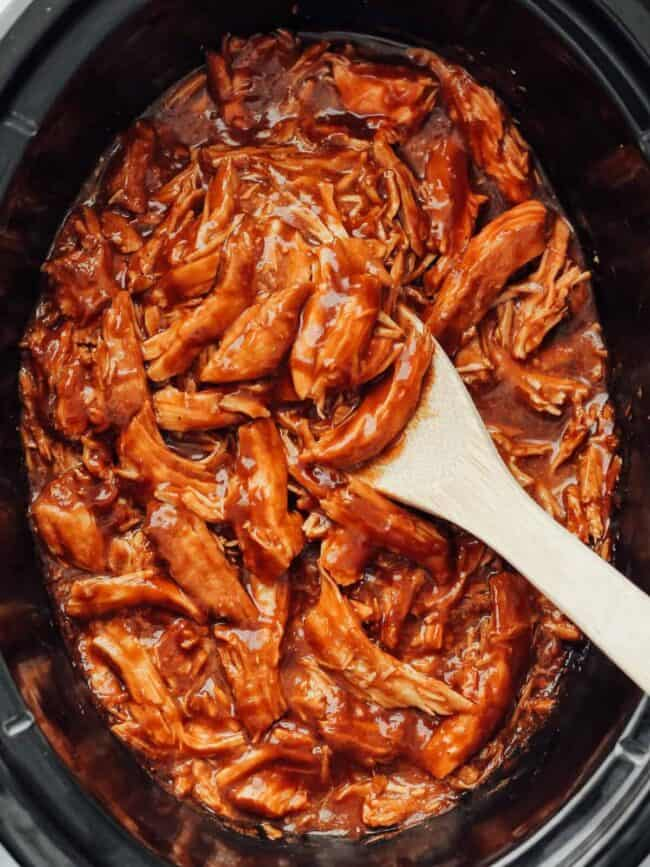

BBQ Pulled Chicken

Description
BBQ shredded chicken is one of those recipes you’ll be happy to have in your
back pocket on busy weeknights. The cooking time is mostly hands-off, it’s made with
just a few ingredients that you probably have on hand already, and you can do so many things with it.
Ingredients
- 1 1/2 cups BBQ sauce
- 1/2 tsp. onion powder
- 1/2 tsp. garlic powder
- Salt to taste
- 2 lbs boneless, skinless chicken breast
Steps
- In a bowl, whisk the BBQ sauce, apple cider vinegar, brown sugar, onion powder, and garlic powder together.
- Place the chicken breasts in the bottom of the slow cooker.
- Pour the sauce over the chicken breasts, covering them fully.
- Cook the chicken on high for 2-3 hours or on low for 4-6 hours.
- Shred the chicken directly in the slow cooker or remove to shred and return to the sauce.
- Give the chicken a good stir to coat it in the sauce.